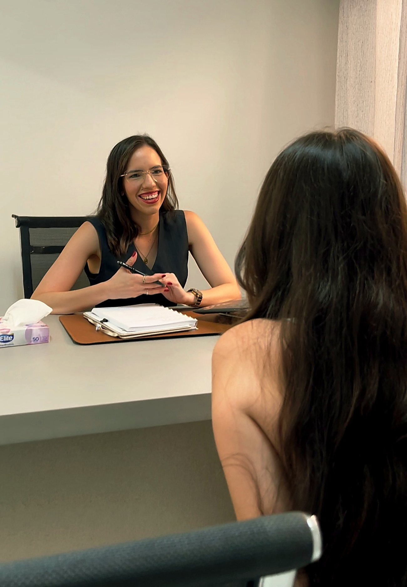
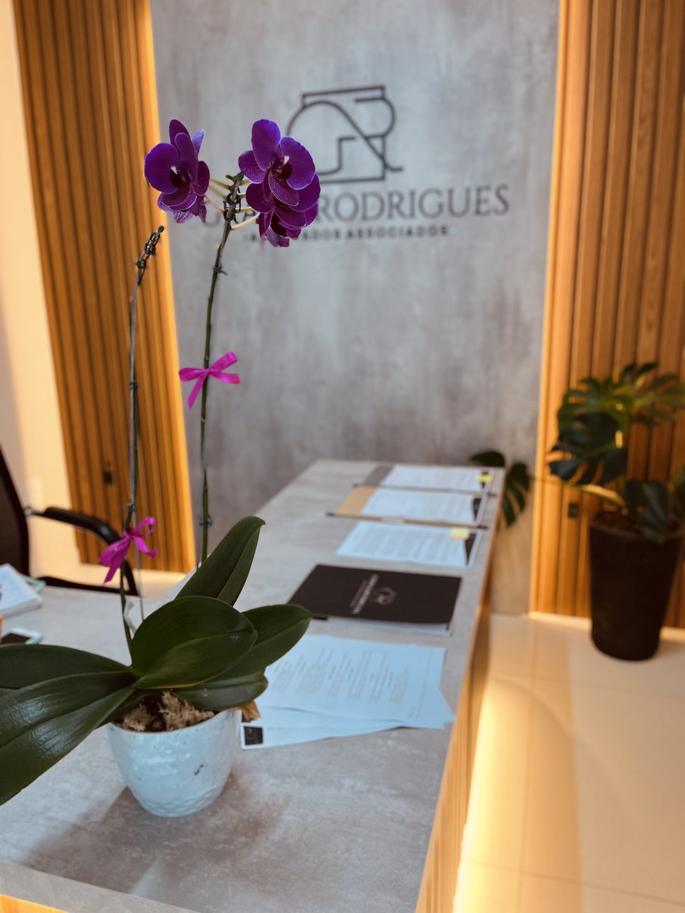
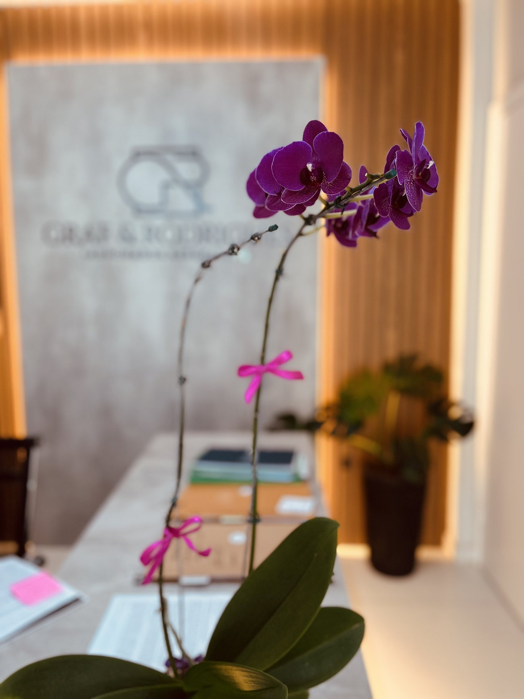

Divórcio e partilha de bens
Consensual ou litigioso, com o mapa completo do patrimônio (imóveis, empresa, investimentos) para você não sair prejudicada.
Advocacia de família para mulheres · todo o Brasil
Sou a Nara Libna Rodrigues, advogada de família. Defendo mulheres em divórcio, partilha de bens, união estável, inventário, guarda e pensão, com estratégia, transparência e uma advocacia que enxerga pessoas antes de processos.
Atendimento sigiloso · on-line para todo o Brasil ou presencial em São Francisco do Sul/SC
Talvez você esteja vivendo isso
deixa pra láe
isso nunca vai se resolver.
Você não precisa ter todas as respostas para dar o primeiro passo. É para isso que eu estou aqui.
Áreas de atuação
Consensual ou litigioso, com o mapa completo do patrimônio (imóveis, empresa, investimentos) para você não sair prejudicada.
Reconhecimento, dissolução e contrato de convivência, porque viver junto também gera direitos.
Escolha do regime de bens com clareza, antes do casamento, para proteger o seu futuro.
Judicial ou em cartório, com orientação em cada etapa num momento que já é difícil por si só.
Regras claras e seguras para a rotina dos seus filhos, sempre a partir do melhor interesse deles.
Fixação, revisão e execução, para que o sustento seja justo e dividido de verdade.
Nara Libna RodriguesAdvogada · OAB/SC 65.147
Prazer, eu sou a Nara Libna
No Direito de Família não chegam apenas processos. Chegam histórias, medos e mulheres que já nem sabem mais como pedir ajuda. Desde a primeira conversa, faço questão que você se sinta acolhida, orientada e respeitada, e que saia sabendo exatamente onde está pisando.
Sócia do Graf & Rodrigues Advogados Associados · São Francisco do Sul/SC
Atendimento on-line
Atendo mulheres de todo o Brasil. Reuniões por vídeo, documentos digitais e atualizações constantes pelo WhatsApp, com a mesma proximidade de quem está do outro lado da mesa.
Cliente atendida on-line
Desde o início senti muita segurança, sempre fui informada de tudo e a distância nunca foi um problema.
Os pilares da minha advocacia
Cada caso é conduzido como único, porque ele é. Atrás de cada processo existe uma mulher e uma história.
“O que você faz na vida das mulheres que defende vai muito além da justiça.”
Você entende cada etapa, sem juridiquês e sem surpresas. Sabe o que está acontecendo e por quê.
“Sempre fui informada de tudo.”
Aqui você é ouvida, respeitada e nunca julgada. Do primeiro “oi” ao último documento.
“Me fez sentir valorizada como mulher, como pessoa.”
Estratégia, atenção aos detalhes e busca incessante pela melhor solução para o seu caso.
“Cada palavra foi colocada com tanta verdade e clareza.”
Disponibilidade real. Você não fica sem resposta e não atravessa nenhuma etapa sozinha.
“Obrigada por todas as vezes que eu mandei mensagem.”

Como funciona
E conta, do seu jeito e no seu tempo, o que está acontecendo.
On-line ou presencial, para entender sua história, seu patrimônio e seus objetivos.
Você sai sabendo quais são os caminhos possíveis e quais são os próximos passos.
Atualizações constantes até o fim, e o cuidado continua mesmo depois dele.
Elas disseram 🤎
Você é um anjo em todo esse processo turbulento. Graças a você, apesar de todas as acusações mentirosas, eu ainda consigo ter uma vida tranquila. Por muito tempo na minha vida eu não tinha alguém pra me defender de todos os julgamentos que eu já ouvi.
Cliente · mensagem de WhatsApp
Um alívio pela página virada, gratidão por você ter segurado minha mão e me acalmado tantas vezes. Fica a certeza de que você não foi só advogada: foi amiga, conselheira, psicóloga…
Cliente · comentário no Instagram
Desde que comecei esse processo com você, me sinto muito mais forte. Que essa história de “deixa como tá”, de “nunca vai se resolver”, não se tornou a minha história.
Cliente · mensagem de WhatsApp
Foram muitas ameaças. A gente ainda fica se perguntando: será que eu tô certa? Tem uma manipulação ali por trás… E dá um alívio muito grande. Você faz um trabalho excepcional.
Cliente · áudio de WhatsApp
Ninguém nunca tinha enxergado esse lado com tanta sensibilidade. Ver isso reconhecido num documento oficial, com tanto respeito e cuidado, me fez sentir valorizada como mãe, como mulher, como pessoa.
Cliente · mensagem de WhatsApp
Em tempos em que o bom atendimento virou exceção, encontrei aqui respeito, humanidade e competência. Gratidão por terem sido luz em meio ao caos.
Avaliação no Google ★★★★★
É o fim de um ciclo horrível, péssimo. E ter você tornou tudo mais leve e respeitoso. É impressionante como a advocacia é apenas um detalhe pra todo o conjunto que você tem como mulher e ser humano!
Cliente · mensagem de WhatsApp
Você não sabe a paz e a tranquilidade que meu coração fica em ouvir isso! O que você faz na vida das mulheres que defende vai muito além da justiça.
Cliente · mensagem de WhatsApp
O escritório
Endereço do escritório
Graf & Rodrigues Advogados Associados
Rua Barão do Rio Branco, 105 · São Francisco do Sul/SC


Me conta o que você está vivendo. A primeira mensagem é o passo mais difícil, e você não precisa dar o resto sozinha.
Chamar no WhatsApp(47) 99177-0906
Dúvidas frequentes
É um momento reservado só para nós duas. Eu escuto a sua história com calma para entender o seu caso por inteiro, e juntas traçamos as estratégias possíveis. Você sai da consultoria com um plano de ação definido, sabendo exatamente quais são os próximos passos.
Sim. Atendo mulheres de todo o Brasil com reuniões por vídeo, documentos digitais e atualizações pelo WhatsApp. Muitas clientes dizem que a distância nunca foi um problema.
Sempre. O sigilo é um dever ético da advocacia e um compromisso pessoal meu com cada mulher que confia a sua história a mim.
Não. Na primeira conversa organizamos o que você já tem e o que pode ser reunido. Você não precisa chegar com tudo pronto.
Conversar não obriga você a nada. Informação traz segurança para decidir no seu tempo.
Eles dependem de cada caso e são apresentados com total transparência antes de qualquer decisão. Você só segue se fizer sentido para você.